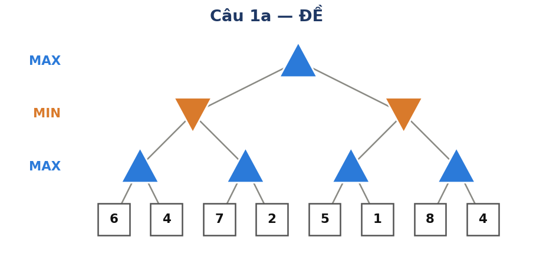
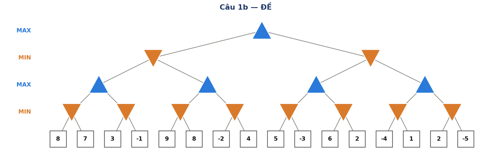
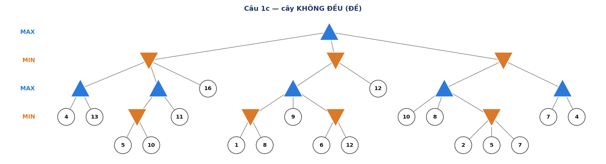
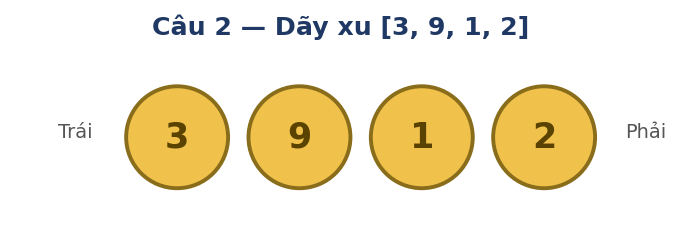

- Nút ▲ MAX lấy max các con; nút ▼ MIN lấy min các con. Giá trị ở lá là điểm cho MAX.
- Alpha-Beta duyệt trái → phải; cắt khi α ≥ β (nút MIN cắt khi v ≤ α; nút MAX cắt khi v ≥ β).
- Luật vàng: "MAX nuôi α, MIN nuôi β"; v cùng loại với nút (MAX→max từ −∞, MIN→min từ +∞).
Với mỗi cây: (1) tìm giá trị các nút và giá trị gốc bằng Minimax, cho biết nước đi tốt nhất của MAX; (2) chạy Alpha-Beta (trái→phải), ghi α/β/v tại mỗi nút và liệt kê các lá bị cắt.



Với cây 1a, chỉ ra thứ tự duyệt các nhánh giúp Alpha-Beta cắt nhiều nhất và ít nhất; nêu độ phức tạp tốt nhất/tệ nhất.
Luật: một dãy đồng xu. Hai người luân phiên, mỗi lượt lấy một xu ở đầu trái hoặc đầu phải của dãy còn lại. Mỗi người muốn tối đa tổng mệnh giá mình lấy. Người đi trước là MAX. Quy ước UTILITY = (tổng MAX) − (tổng MIN).

- (5đ) Mô hình hóa 6 thành phần: S₀, PLAYER, ACTIONS, RESULT, TERMINAL-TEST, UTILITY.
- (7đ) Vẽ toàn bộ cây, điền UTILITY ở lá; chạy Minimax: giá trị gốc và nước đi đầu tối ưu.
- (3đ) Chiến lược tham lam (luôn lấy đầu lớn hơn) cho kết quả gì? Vì sao không tối ưu?
Luật: có 5 viên sỏi. Hai người luân phiên, mỗi lượt lấy 1 hoặc 2 viên; ai lấy viên cuối cùng thì THẮNG. Người đi trước là MAX. Quy ước UTILITY = +1 nếu MAX thắng, −1 nếu MIN thắng.
- (4đ) Mô hình hóa 6 thành phần cho trò chơi này.
- (4đ) Vẽ cây trò chơi (mỗi nút ghi số viên còn lại; cạnh ghi số viên lấy), điền UTILITY ở lá; chạy Minimax tìm giá trị gốc và nước đi đầu tối ưu.
- (2đ) Người đi trước thắng hay thua nếu cả hai chơi tối ưu?
Cây cờ vua quá lớn để duyệt tới hết ván, nên ta tìm sâu 2 tầng rồi dừng (Trắng đi → Đen đáp) và dùng hàm đánh giá:
Với quy ước: Tốt (P) = 1, Mã (N) = Tượng (B) = 3, Xe (R) = 5, Hậu (Q) = 9.
Trắng đi (MAX). Thế cờ hiện tại đang cân bằng chất (EVAL = 0):

Xét 3 nước ăn quân ứng viên của Trắng; với mỗi nước, Đen có 2 đáp trả (ăn lại / không ăn lại). Bảng diễn biến và EVAL ở mỗi thế cờ lá (sau 2 nước, tính theo thay đổi chất so với hiện tại):
| Nước Trắng | Đáp trả của Đen | Diễn biến | EVAL |
|---|---|---|---|
| A: Nxd5 (Mã ăn Tốt d5) | Đen không ăn lại được (Mã an toàn) | Trắng +1 Tốt | +1 |
| A: Nxd5 | Đen đi dở, mất thêm 1 Tốt | Trắng +2 Tốt | +2 |
| B: Rxe7 (Xe ăn Tượng e7) | …Rxe7 (Xe Đen ăn lại) | +Tượng(3) − Xe(5) | −2 |
| B: Rxe7 | Đen không ăn lại | +Tượng(3) | +3 |
| C: Bxc6 (Tượng ăn Mã c6) | …bxc6 (Tốt ăn lại) | +Mã(3) − Tượng(3) | 0 |
| C: Bxc6 | Đen không ăn lại | +Mã(3) | +3 |
- (8đ) Vẽ cây tìm kiếm 2 tầng (Trắng-MAX → Đen-MIN → EVAL) và chạy Minimax: tìm giá trị mỗi nước, giá trị gốc và nước đi tốt nhất cho Trắng.
- (10đ) Chạy Alpha-Beta (trái→phải): ghi α/β/v tại mỗi nút và liệt kê các lá bị cắt.
- (4đ) Giải thích bằng ngôn ngữ cờ vua vì sao nước tối ưu lại tốt hơn hai nước còn lại (gợi ý: "ăn Tốt sạch" vs "mất chất" vs "đổi ngang").
- (3đ) Vì sao phải dùng cutoff + EVAL thay vì duyệt tới hết ván? EVAL (đếm chất) là ước lượng thô — điều này ảnh hưởng gì tới tính tối ưu? Nêu ràng buộc UTILITY(thua) ≤ EVAL ≤ UTILITY(thắng).
Cho cây MCTS hiện tại (gốc R, ba nước A, B, C; mỗi nút ghi w/n = số ván thắng / số lượt):

Khi ở bước Selection, mỗi nút con được chấm điểm bằng:
trong đó: w = số ván thắng đã tích lũy qua nút; n = số lượt đã đi qua nút; N = số lượt của nút cha; C = hằng số khám phá (ở đây C = √2 ≈ 1.414).
- Số hạng w/n = tỉ lệ thắng → phần khai thác (ưu tiên nút đang tốt).
- Số hạng C·√(ln N / n) = phần khám phá (thưởng cho nút ít được thử, n nhỏ).
- Quy ước: nút chưa từng thăm (n = 0) có UCB = +∞ (phải thăm trước). Selection luôn chọn nút có UCB lớn nhất.
Hằng số hỗ trợ tính tay: ln 12 ≈ 2.485, ln 13 ≈ 2.565, ln 14 ≈ 2.639.
Kết quả 3 ván mô phỏng cho sẵn (playout vòng 1, 2, 3): THẮNG, THẮNG, THẮNG.
- (12đ) Thực hiện 3 vòng lặp MCTS. Mỗi vòng: tính UCB cho A, B, C → chọn nút (Selection) → dùng kết quả playout cho sẵn (Simulation) → cập nhật w/n của nút được chọn và của gốc (Back-propagation). Ghi rõ w/n sau mỗi vòng.
- (3đ) Sau 3 vòng, nước đi nào được chọn để đi thật? Dựa vào tiêu chí gì?
- (3đ) Giả định: nếu playout vòng 1 là THUA, hãy tính lại UCB ở vòng 2 và cho biết nút nào được chọn. Điều này minh họa tính chất gì của MCTS?
- (2đ) Giải thích ý nghĩa hai số hạng trong công thức UCB (khai thác vs khám phá).